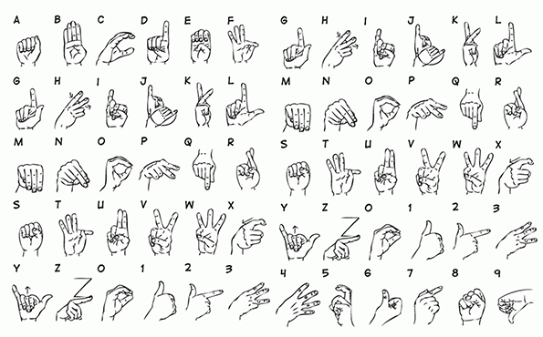

Libras
Alfabeto
O alfabeto manual de Libras teve origem ainda no império. Foi criado pelo abade Charles-Michel de LÉpée, no século XVI. Ele foi o fundador da primeira escola para deficientes auditivos em Paris, e o precursor no uso da língua de sinais. Este método de linguagem utilizando sinais foi desenvolvido e aperfeiçoado pelo abade Sicard e Clerc, surdos, que começaram a ensinar a língua de sinais por meio gramatical.

O que é ?
A LIBRAS, Língua Brasileira de Sinais, ao contrário do que muitos pensam, é uma língua e possui uma estrutura gramatical própria, ultrapassa as ideias daqueles que acreditam ser apenas gestos ou mímicas, como uma maneira de comunicação entre os deficientes auditivos.
BSL = British Sign Language

LSF = Langue des Signes Française
ASL = American Sign Language

LSA = Lengua de Señas Argentina
LGP = Língua Gestual Portuguesa

LSCH = Lengua de Señas Chilena
SLN = Sign Language of Netherlands

JSL = Japanese Sign Language.
KSL = Korean Sign Language